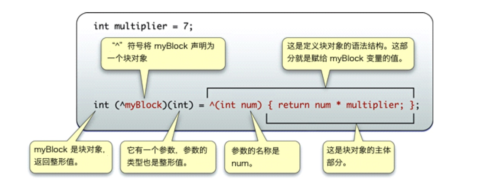

Block 概念
闭包 = 一个函数「或指向函数的指针」+ 该函数执行的外部的上下文变量「也就是自由变量」；
Block 是 Objective-C 对于闭包的实现。其中，Block：
- 可以嵌套定义，定义 Block 方法和定义函数方法相似
- Block 可以定义在方法内部或外部
- 只有调用 Block 时候，才会执行其{}体内的代码
- 本质是对象，使代码高聚合
Block 格式
1. Block的定义格式
返回值类型 (^block变量名)(形参列表) = ^(形参列表) {
};

2. Block表达式语法(等号后是表达式语法)
^ 返回值类型 (参数列表) {表达式}
^ int (int count) {
return count + 1;
};
其中，可省略部分有：返回类型(上图为省略返回类型)
^ (int count) {
return count + 1;
};
参数列表为空，则可省略，例：
^ {
NSLog(@"No Parameter");
};
即表达式最简模式语法为：
^ {表达式}
3. Block使用
1、 无参数，无返回值，声明和定义
void(^MyBlockOne)(void) = ^(void){
NSLog(@"无参数，无返回值");
};
MyBlockOne();//block的调用
2、有参数无返回值
void(^MyblockTwo)(int a) = ^(int a){
NSLog(@"@ = %d我就是block，有参数，无返回值",a);
};
MyblockTwo(100);
3、有参数有返回值
int(^MyBlockThree)(int, int) = ^(int a, int b){
NSLog(@"%d我就是block，有参数，有返回值",a + b);
returna + b;
};
MyBlockThree(12,56);
4、有参数有返回值
int(^MyblockFour)(void) = ^{
NSLog(@"无参数，有返回值");
return45;
};
MyblockFour();
5、实际开发中常用typedef 定义Block
//用typedef定义一个block：
typedef int (^MyBlock)(int, int);
//定义类的属性
@property (nonatomic, copy) MyBlock myBlockOne;
//使用
self.myBlockOne = ^int (int ,int){
//...
}
4. Block与外界变量
全局块(_NSConcreteGlobalBlock)
栈块(_NSConcreteStackBlock)
堆块(_NSConcreteMallocBlock) （ARC下引入外界变量）
不使用 __block
1、 创建 .c 文件
int main(){
int a = 10;
void (^block)(void) = ^{
printf("%d",a);
printf("test block\n");
};
block();
return 0;
}
2、编译
$ gcc testBlock.c
生成可执行文件 a.out
3、执行
$./a.out testBlock.c
- 使用clang 生成 c++ 文件
$ clang -rewrite-objc testBlock.c
c++ 文件 内容
static void __main_block_func_0(struct __main_block_impl_0 *__cself) {
int a = __cself->a; // bound by copy
// 生成一个新的值
printf("%d",a);
printf("test block\n");
}
//......
int main(){
int a = 10;
void (*block)(void) = ((void (*)())&__main_block_impl_0((void *)__main_block_func_0, &__main_block_desc_0_DATA, a));
((void (*)(__block_impl *))((__block_impl *)block)->FuncPtr)((__block_impl *)block);
return 0;
}
使用 __block
int main(){
__block int a = 10;
void (^block)(void) = ^{
printf("%d",a);
printf("test block\n");
};
block();
return 0;
}
步骤同上，生成 c++ 文件
static void __main_block_func_0(struct __main_block_impl_0 *__cself) {
__Block_byref_a_0 *a = __cself->a; // bound by ref
// 指针
printf("%d",(a->__forwarding->a));
printf("test block\n");
}
//......
int main(){
//声明的变量由栈 copy 到堆，并将指针传递给block
__attribute__((__blocks__(byref))) __Block_byref_a_0 a = {(void*)0,(__Block_byref_a_0 *)&a, 0, sizeof(__Block_byref_a_0), 10};
void (*block)(void) = ((void (*)())&__main_block_impl_0((void *)__main_block_func_0, &__main_block_desc_0_DATA, (__Block_byref_a_0 *)&a, 570425344));
((void (*)(__block_impl *))((__block_impl *)block)->FuncPtr)((__block_impl *)block);
return 0;
}